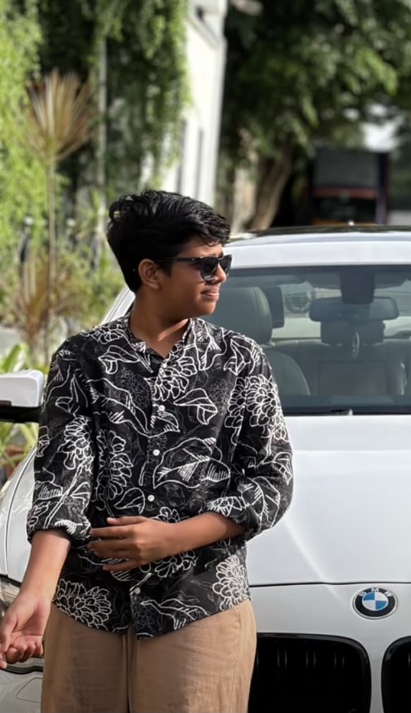

"Every cut is a choice. Every frame tells a story. Editing is where the rhythm is found."
Crafting narratives frame by frame. From rough cuts to final renders, I manipulate pixels and audio waveforms to tell compelling stories that captivate and resonate.

Obsessed with the perfect cut.
I am Ajmal Ar, a passionate video editor dedicated to cinematic perfection. Blending technical precision with creative vision, my workspace is a playground of seamless J-Cuts, L-Cuts, and precise Keyframing.
Whether it's matching color spaces (Rec.709 is my native tongue) or finding the perfect Foley for that impactful transition, I ensure every single frame serves the story.
The tools and techniques I use to manipulate the timeline.
Seamless J-Cuts, L-Cuts, and pacing that keeps the audience hooked. Every cut is intentional, every frame serves a purpose in the narrative.
LUTs, Scopes, and precise white balancing for the perfect cinematic mood.
Pinpoint accuracy in keyframing and compositing elements.
Audio mixing, Foley integration, and waveform manipulation for immersive experiences.